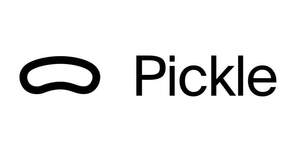

Trade Mark Journal No.2025/047 21 November 2025
UK00004292121 10 November 2025 (9)

- Class 9
- Smart glasses; virtual reality glasses; virtual reality headsets; augmented reality glasses; augmented reality headsets; virtual reality hardware, namely, headsets and glasses; augmented reality hardware, namely, headsets and glasses; mixed reality hardware, namely, headsets and glasses; mixed reality glasses; mixed reality headsets; digital video eyewear; head mounted video displays; head-mounted display screen devices; glasses with the function of wireless communication; microdisplays, namely, head mounted video displays and near eye video displays; goggles for enabling virtual reality, augmented reality and mixed reality world experiences; near eye displays; near eye display systems for the generation and display of standard reality, augmented reality, and mixed reality content; downloadable virtual reality software; downloadable augmented reality software; downloadable mixed reality software; downloadable software for smart glasses; downloadable software for virtual reality glasses; downloadable software for virtual reality headsets; downloadable software for augmented reality glasses; downloadable software for augmented reality headsets; downloadable software for virtual reality hardware; downloadable software for augmented reality hardware; downloadable software for mixed reality hardware; virtual reality software for interactive entertainment and virtual reality gaming; augmented reality software for interactive entertainment and augmented reality gaming; mixed reality software for interactive entertainment and mixed reality gaming; downloadable software for operating, configuring, and managing virtual reality headsets and controllers; downloadable software for operating, configuring, and managing augmented reality headsets and controllers; downloadable software for operating, configuring, and managing mixed reality headsets and controllers; downloadable software for gesture recognition, object tracking, motion control, and content visualisation; downloadable software for navigating virtual reality environments; downloadable software for navigating augmented reality environments; downloadable software for navigating mixed reality environments; downloadable software for use in creating and designing virtual reality software; downloadable software for use in creating and designing augmented reality software; downloadable software for use in creating and designing mixed reality software; downloadable software for enabling transmission of images, audio, audio visual and video content and data; downloadable game software in the nature of video games; downloadable game software in the nature of computer games; downloadable game software in the nature of interactive multimedia games; downloadable game software in the nature of virtual reality games; downloadable game software in the nature of augmented reality games; downloadable game software in the nature of mixed reality games.
Pickle, Inc.
Representative: Swindell & Pearson Limited